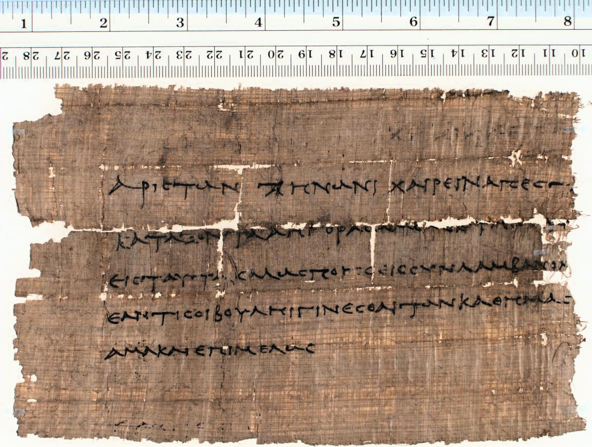

Linking Page Images to Transcriptions with SVG
Hugh A. Cayless
Head, R&D Group, Carolina Digital Library and Archives
So, what's the point of this?
- Lots of chat this summer about text-image linking
- Moderate to gigantic manuscript digitization projects on my horizon
- What's the state of the tools for:
- analysing images?
- linking image to text?
- displaying and manipulating the results?
[any material that should appear in print but not on the slide]
Desiderata
- the process should be automated (as much as possible)
- the result should scale down as much as possible: from line to word/letter (or at least contiguous text segment)
- should support linking by URI
- should be able to be manipulated in arbitrary ways
Goals
- Create an SVG overlay of the manuscript page image
- Analyse the structure of the SVG document to detect lines, etc.
- Link the groups so produced to structures in a TEI transcription
- Display the results in a usable GUI
Method
- Turn the image into an SVG
- Organise the paths into groups
- Link the ids of the paths to ids of structures in the transcript
- Serialise the results of the analysis into a form that can be displayed and worked with
Example: papyrus

papyrus image as SVG
Toolchain: analysis
- Python
- the script reads in the SVG produced by potrace and filtered through Inkscape, does some filtering, detects the lines, then serializes the results back to SVG and Javascript
Example: analysed SVG
Toolchain: display
- Javascript:
- OpenLayers
- hacked (I use the term advisedly) to accomodate paths and groups of paths
- jQuery
- XSLT (to turn the TEI transcription into HTML)
Example
What's next?
- Lots of questions:
- How much can be automatic?
- How deeply can we analyse?
- How best to link?
- Need to refine and test on lots more content
Automation
- Can we compute the right black/white cutoff point?
- How much, and what kind of image preprocessing should be done?
- What's the best way of throwing out extraneous paths?
- Can the linking be automated?
Linking
- The demo version uses JSON, basically a pair of hash maps, id -> list of ids
- TEI has ways of doing this, but is that the right place for it?
- linkbases?
Conclusions
- Method seems promising
- Tools are in an advanced enough state to do really useful work
- References: